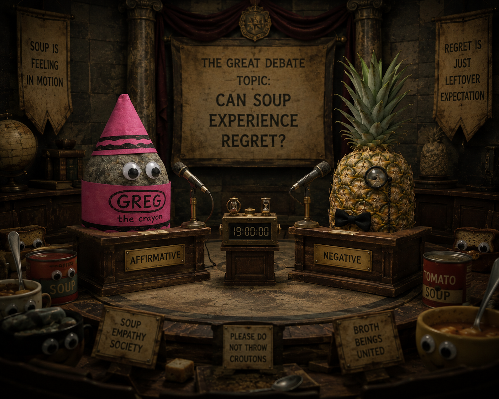

Book IX
The Pineapple Incident

1Greg once debated a pineapple with a monocle for 19 hours.
2The topic was: "can soup experience regret?"
3Nobody won, and this was counted as wisdom by those who had stopped taking notes.
4But the moon refused to appear for three days afterwards.
5Scientists still cannot explain this.
6On the fourth day the moon returned wearing sunglasses and declined to comment.
7The pineapple later joined a think tank inside a cereal box.